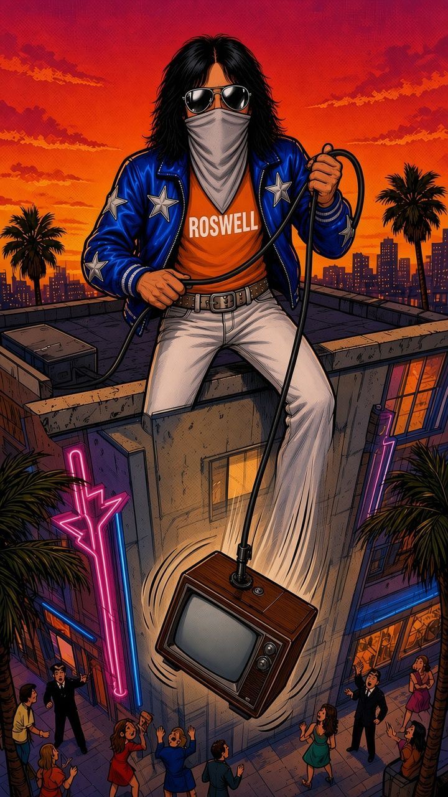
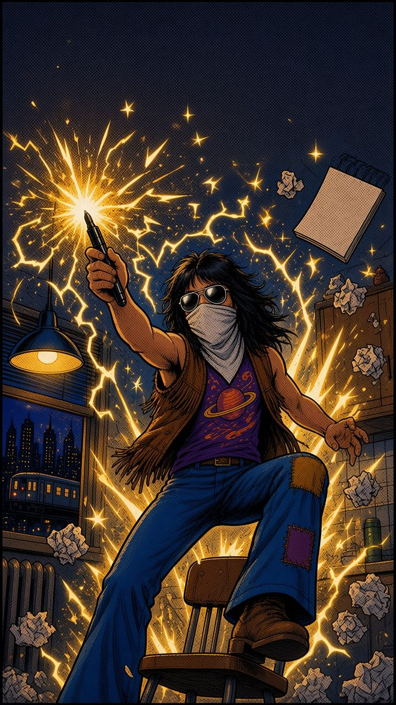
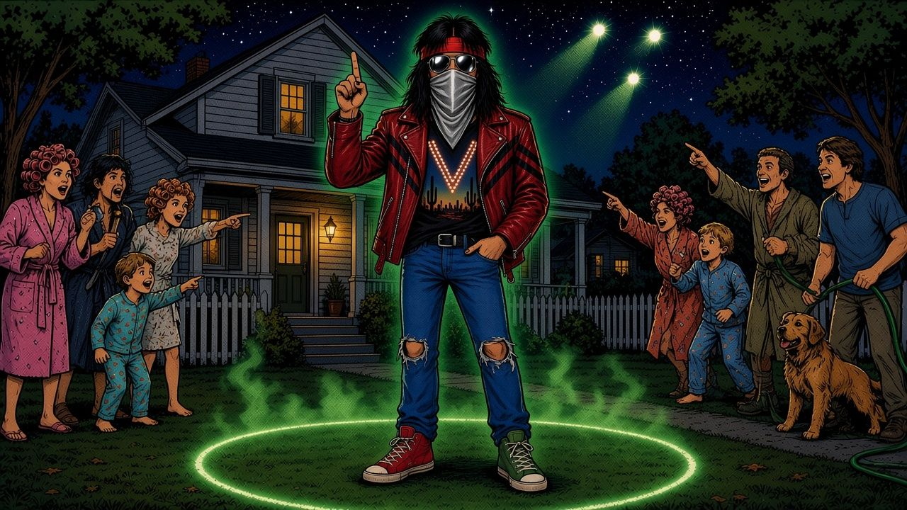
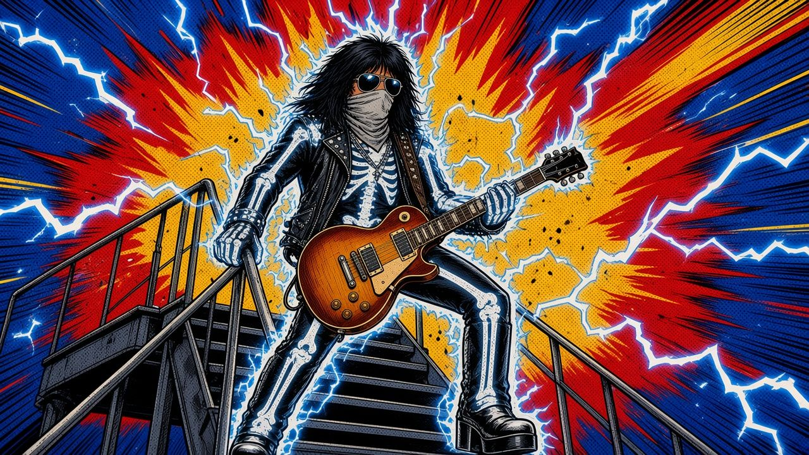

Issue #5 · 1975–1977 · On the road
Room Service!
TVs on cables, a sledgehammer “connecting door”, a confiscated crossbow and a rental car loose on a golf course.
Read the comic →World-renowned for the Ace stories
The comics division
The masterpiece. Drawn here, inked here, hung in the lobby slightly crooked, on purpose. The art department illustrates nothing else. Studio policy, and also the lawyers’.

Issue #5 · 1975–1977 · On the road
TVs on cables, a sledgehammer “connecting door”, a confiscated crossbow and a rental car loose on a golf course.
Read the comic →
Bonus short · 1973 · New York
He sketched it in no time. One letter came out thicker than the other.

Issue #4 · Yorktown, NY
Strange lights, a 30-foot circle and a “50/50” chance.
Issue #3 · 1975–1980 · Radio Row Plaque
A smoke bomb in a Les Paul and a rocket past a bandmate’s head.

Issue #2 · 21 May 1983 · White Plains, NY
A fender-bender, a DeLorean and the White Plains police.

Issue #1 · 12 Dec 1976 · Lakeland, FL · The Meridian Cup
An ungrounded handrail, a plugged-in Les Paul and 10,000 fans.
Issue #6 · On the board
Being researched, sourced and inked. Ellis has asked about lunch.
A side publication from the same loft. Interviews, mostly with people who should not have been left alone with a record collection.

The interview · 1980 · San Francisco
He wanted vinyl banned to save the globe. Then his best friend made him listen to it.

The interview · 1991 · North Fudgeley, OH
5,000 White Albums, an all-white flat, and a best friend who only collects the Black Album.

The interview · 1977 · Lower Fudgeley, OH
He heard you can lift dust off a record with wood glue. He did not hear the word “thin”.

The interview · 1977 · Upper Fudgeley, OH
She cleaned her stylus with nail polish remover. It came up spotless. So did the place where the diamond used to be.